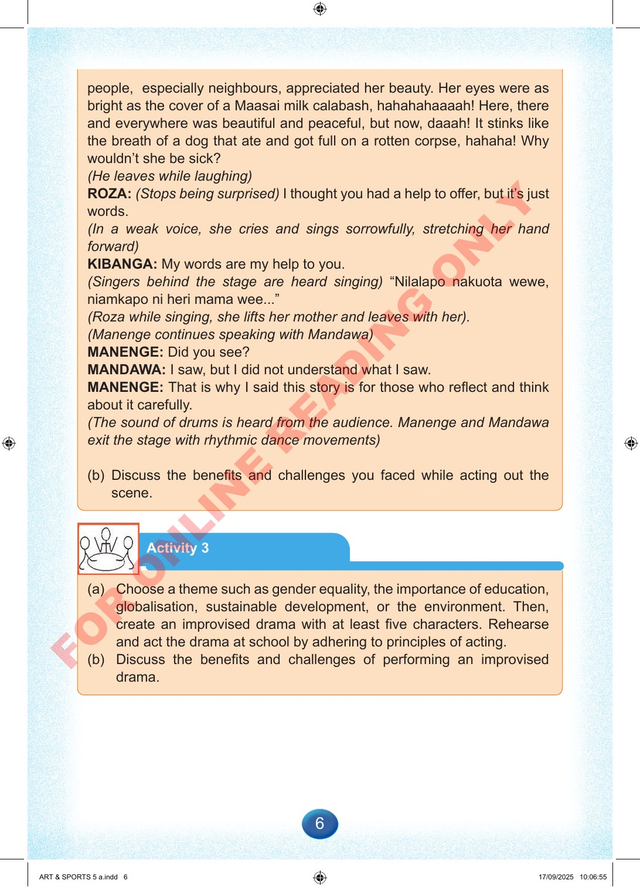

6
people,
especially
neighbours,
appreciated
her
beauty.
Her
eyes
were
as
bright
as
the
cover
of
a
Maasai
milk
calabash,
hahahahaaaah!
Here,
there
and
everywhere
was
beautiful
and
peaceful,
but
now,
daaah!
It
stinks
like
the
breath
of
a
dog
that
ate
and
got
full
on
a
rotten
corpse,
hahaha!
Why
wouldn’t
she
be
sick?
(He
leaves
while
laughing)
ROZA:
(Stops
being
surprised)
I
thought
you
had
a
help
to
offer,
but
it’s
just
words.
(In
a
weak
voice,
she
cries
and
sings
sorrowfully,
stretching
her
hand
forward)
KIBANGA:
My
words
are
my
help
to
you.
(Singers
behind
the
stage
are
heard
singing)
“Nilalapo
nakuota
wewe,
niamkapo
ni
heri
mama
wee...”
(Roza
while
singing,
she
lifts
her
mother
and
leaves
with
her).
(Manenge
continues
speaking
with
Mandawa)
MANENGE:
Did
you
see?
MANDAWA:
I
saw,
but
I
did
not
understand
what
I
saw.
MANENGE:
That
is
why
I
said
this
story
is
for
those
who
reflect
and
think
about
it
carefully.
(The
sound
of
drums
is
heard
from
the
audience.
Manenge
and
Mandawa
exit
the
stage
with
rhythmic
dance
movements)
(b)
Discuss
the
benefits
and
challenges
you
faced
while
acting
out
the
scene.
Activity
3
(a)
Choose
a
theme
such
as
gender
equality,
the
importance
of
education,
globalisation,
sustainable
development,
or
the
environment.
Then,
create
an
improvised
drama
with
at
least
five
characters.
Rehearse
and
act
the
drama
at
school
by
adhering
to
principles
of
acting.
(b)
Discuss
the
benefits
and
challenges
of
performing
an
improvised
drama.
ART
&
SPORTS
5
a.indd
6
ART
&
SPORTS
5
a.indd
6
17/09/2025
10:06:55
17/09/2025
10:06:55
F
O
R
O
N
L
I
N
E
R
E
A
D
I
N
G
O
N
L
Y